フィードバック アンプの設計
このデモでは、Control System Toolbox™ を使用して非反転フィードバック アンプの回路設計を行います。この設計では、電気フィードバック回路の標準的な構成要素であるオペ アンプ (op amp) を作成します。
このチュートリアルは、Control System Toolbox で提供されるツールを使用して、実際の電気システムを設計、モデル化し、解析する様子のデモを行います。
目次
オペ アンプの説明
電気フィードバック回路の標準的な構成要素としては、一般的に 1e5 ～ 1e7 の範囲においてきわめて高い dc ゲインを持つように設計された差動電圧アンプである、オペ アンプ (op amp) があります。
オペ アンプの電気記号は次のとおりです。
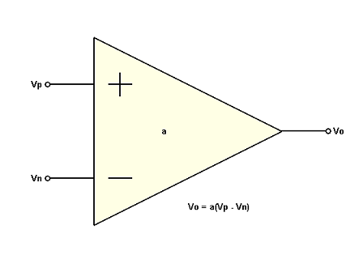
このデモでは、2 つの極 (周波数 w1 および w2) と高 dc ゲイン (a0) を持つ非補償型オペ アンプを使用することを前提としています。このオペ アンプが (飽和モードではなく) 線形モードで作動していると仮定すると、オペ アンプの開ループ伝達関数は、線形時不変 (LTI) システムとして表現できます (上記を参照)。
高次極は物理的なオペ アンプには存在しますが、この例では、振幅が 1 をはるかに下回っている周波数範囲にこれらの極が含まれていることが前提となっています。
開ループ伝達関数:
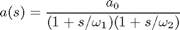
以下のシステム パラメーターが仮定されています。
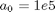
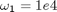
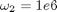
a0 = 1e5; w1 = 1e4; w2 = 1e6;
次に、Control System Toolbox を使用して、このシステムの伝達関数モデルを作成します。このモデルは、MATLAB® ワークスペースに LTI オブジェクトとして保存されます。
まず、TF コマンドを使用して、ラプラス変数 s を定義します。その後で、's' を使用して、開ループ伝達関数 a(s) を作成します。
s = tf('s');
a = a0/(1+s/w1)/(1+s/w2)
Transfer function:
1e015
------------------------
s^2 + 1.01e006 s + 1e010
BODEPLOT コマンドを使用すると、a(s) の周波数応答を表示できます。
h = bodeplot(a,'r'); setoptions(h,'FreqUnits','rad/sec','MagUnits','dB','PhaseUnits','deg',... 'YLimMode','Manual','YLim',{[0,110],[-180,0]});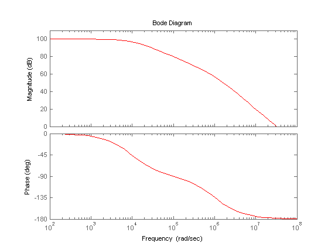
このボード線図のプロパティのメニューにアクセスするには、プロットを右クリックします。 応答の詳細を取得するために使用できる移動可能なデータ マーカーを作成するには、曲線を左クリックします。
STEPPLOT コマンドと DCGAIN コマンドを使用すると、正規化された a(s) のステップ応答を表示できます。
a_norm = a / dcgain(a); stepplot(a_norm,'r') title('Normalized Open-Loop Step Response'); ylabel('Normalized Amplitude');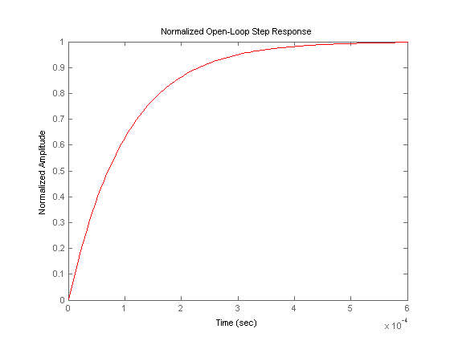
プロットを右クリックし、[特性]、[整定時間] を選択して、整定時間を表示します。整定時間マーカーの上にマウスを置いたままにすると、整定時間の正確な値が表示されます。
フィードバック アンプ
ここでは、抵抗性フィードバック ネットワークを追加して、システムを非反転アンプとして接続します。
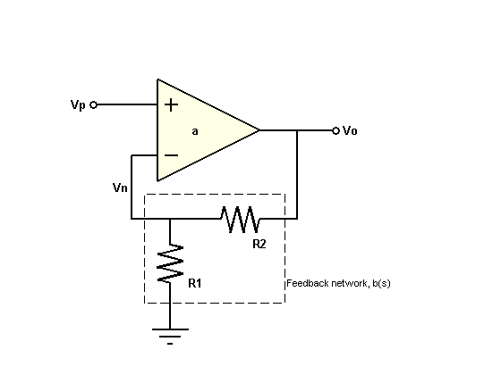
このフィードバック ネットワーク b(s) は、入力 Vo と出力 Vn を持つ分圧器です。比率 Vn/Vo を求めると、b(s) の伝達関数が得られます。
b = Vn / Vo = R1 / (R1 + R2)
このシステムのブロック線図表現は次のようになります。
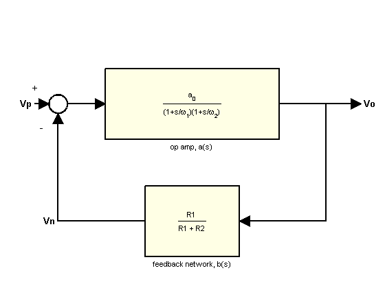
比率 Vo/Vp を求めると、閉ループゲイン A(s) が得られます。
A = Vo / Vp = a / (1 + ab)
積 "ab" が十分に大きい (>>1) 場合、A(s) は次のように近似できます。
A = 1 / b
dc ゲイン (Vo/Vp) 10 のアンプを設計する必要があり、R1 が 10 kΩで固定されていると仮定します。R2 の解を求めると、次のようになります。
A0 = 10;
b = 1 / A0; % approximation for ab>>1
R1 = 10000;
R2 = R1 * (1/b - 1)
R2 =
90000
FEEDBACK コマンドを使用して、閉ループ システムを作成します。
A = feedback(a,b);
次に、BODEMAG コマンドを使用して、a(s) と A(s) の周波数応答を同時にプロットします。
bodemag(a,'r',A,'b'); legend('Open-Loop Gain (a)','Closed-Loop Gain (A)') set(gca,'YLim',[0,110]) % Annotations opampdemo_annotate(1)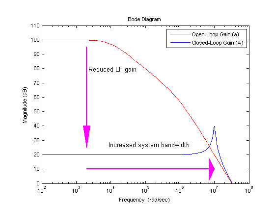
負のフィードバックを使用して低周波数 (LF) ゲインを低減したことにより、それに対応するシステム帯域幅の増加が生じています (ゲインが最大値より 3dB 低下する周波数として定義)。
このゲイン/帯域幅のトレードオフは、フィードバック アンプ回路の設計における強力なツールです。
ゲインはフィードバック ネットワークによって支配されるようになったため、オペ アンプの自然な (開ループ) ゲインの変動に対するこのゲインの感度がどの程度であるかを考慮すると効果的です。
ただし、システム感度を導出する前に、信号がループ内を移動する過程で得るゲインの合計値、ループ ゲイン L(s)=a(s)b(s) を定義しておくと便利です。
L = a * b;
この値は、システム感度と安定余裕を評価するために使用します。
システム感度 S(s) は、a(s) の変動に対する A(s) の感度を表します。
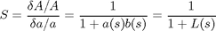
S(s) と L(s) の間の逆相関関係は、「ゲインの感度抑制」という、負のフィードバックがもたらすもう 1 つのメリットを表しています。
S = 1 / (1 + L);
S(s) は、フィードバック方程式と形式が同じであるため、より堅牢な FEEDBACK コマンドを使用して作成できます。
S = feedback(1,L);
S(s) と A(s) の振幅は、BODEMAG コマンドを使用して同時にプロットできます。
bodemag(A,'b',S,'g') legend('Closed-Loop Gain(A)', 'System Sensitivity(S)',4)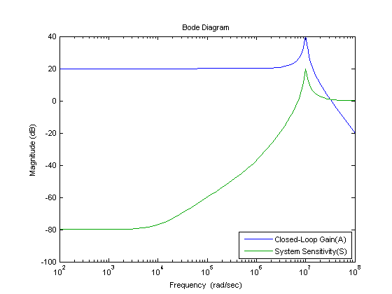
低周波数感度 (約 -80 dB) が非常に小さいことは、閉ループ ゲインが開ループ ゲインの変動の影響を最小限にしか受けない設計であることを示しています。このような a(s) の変動は、製造のばらつきや温度変化などを原因としてよく起こります。
STEPPLOT コマンドを使用すると、A(s) のステップ応答をチェックできます。
stepplot(A)
%Annotation
opampdemo_annotate(2)
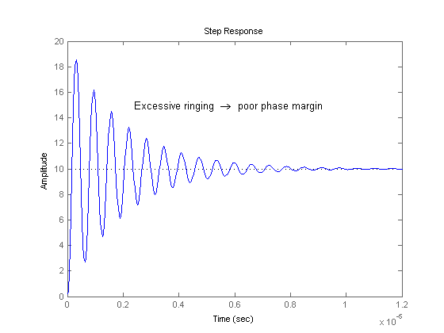 フィードバックの使用によって整定時間が大きく (約 98%) 短縮されました。ただし、ステップ応答には、安定余裕が少ないことを意味する大量のリンギングが示されています。
安定余裕を解析するには、MARGIN コマンドを使用してループ ゲイン L(s) をプロットします。
margin(L)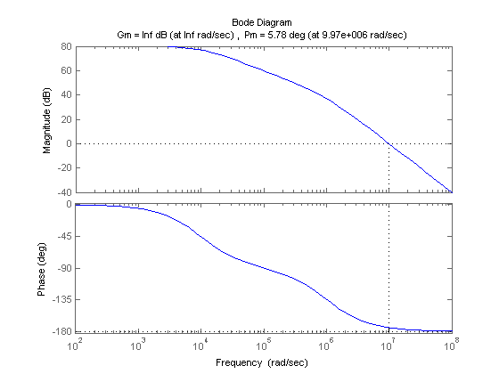
結果として生成されるプロットに、位相余裕が 6 度未満であることが示されます。このアンプを補償して、位相余裕を許容可能なレベル (通常は 45 度以上) まで引き上げることによって、過剰なオーバーシュートやリンギングを低減する必要があります。
フィードバック リード補償器
"フィードバック リード補償器" は、この種類の回路で一般的に使用される補償方法です。この手法では、コンデンサー C をフィードバック抵抗器 R2 と並列させて追加することによって、b(s) が変更されます。
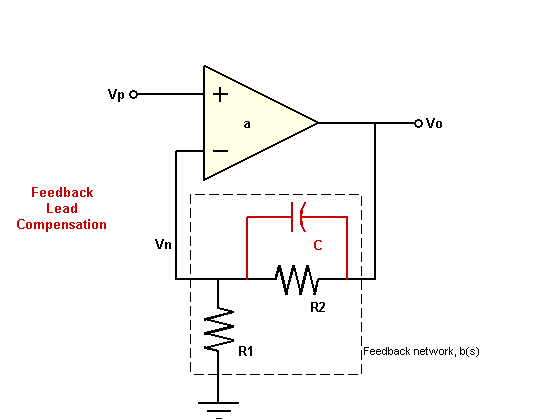
コンデンサーの値を選択する際は、交差周波数の近傍の b(s) に位相進みを加えることで、アンプの位相余裕を大きくすることを考慮できます。
新しいフィードバック伝達関数は次のようになります。
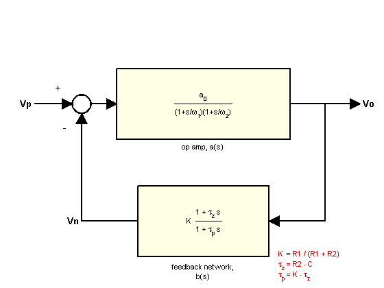
L(s) の 0dB 交差周波数にゼロの b(s) を挿入することによって C の値を近似できます。
[Gm,Pm,Wcg,Wcp] = margin(L); C = 1/(R2*Wcp)
C = 1.1139e-012
アンプの応答に対する C の影響を調べるには、初期推定に基づいて、いくつかの C の値に関する b(s) の LTI モデル配列を作成します。
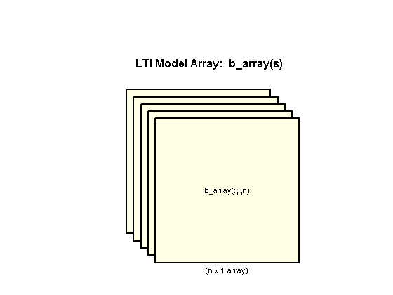
K = R1/(R1+R2); C = [1:.2:3]*1e-12; for n = 1:length(C) b_array(:,:,n) = tf([K*R2*C(n) K],[K*R2*C(n) 1]); end
次に、A(s) と L(s) の LTI 配列を作成できます。
A_array = feedback(a,b_array); L_array = a*b_array;
STEPPLOT コマンドを使用して、LTI 配列 A_array(s) 内のすべてのモデルのステップ応答を A(s) のステップ応答と共にプロットできます。
stepplot(A,'b:',A_array,'b',[0:.005:1]*1.5e-6); title('Closed-Loop Step Response (Compensated)'); % Plot Annotations opampdemo_annotate(3)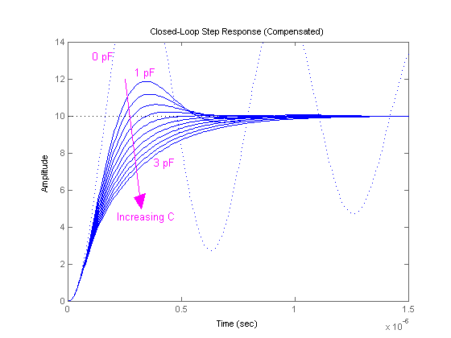
ループ ゲイン配列 L_array(s) の位相余裕は、MARGIN コマンドを使用して見つけることができます。
[Gm,Pm,Wcg,Wcp] = margin(L_array);
位相余裕を C の関数としてプロットできるようになりました。
plot(C*1e12,Pm,'g'); set(gca,'XLim',[0.8 3.6],'YLim',[45 60],'Box','on') xlabel('Compensation Capacitor, C (pF)'); ylabel('Phase Margin (deg)') % Plot Annotations opampdemo_annotate(4)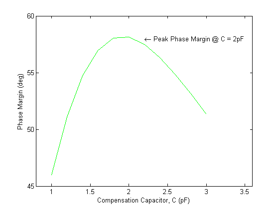
C=2pF (2e-12) の場合は、58 度の最大位相余裕が取得されます。
C=2pF に対応するモデルは、LTI 配列 b_array(s) 内の 6 番目のモデルです。このモデルの閉ループ システムのステップ応答をプロットするには、LTI 配列 A_array(s) のインデックス 6 を選択します。
A_comp = A_array(:,:,6); stepplot(A,'b:',A_comp,'b') legend('Uncompensated (0 pF)','Compensated (2 pF)')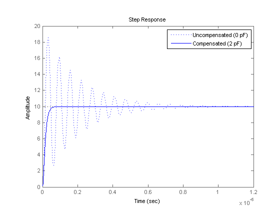
整定時間がさらに (85%) 短縮されました。
BODE コマンドを使用すると、3 つのすべてのモデル (開ループ、閉ループ、補償済み閉ループ) の周波数応答を重ね合わせることができます。
bodeplot(a,'r',A,'b:',A_comp,'b') legend('a(s)','A(s)','A\_comp(s)');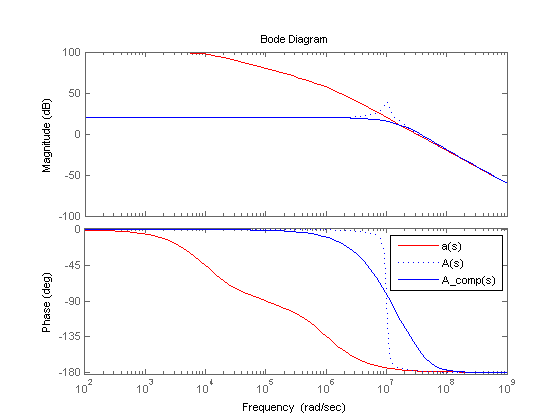
補償コンデンサーを追加したことによって、閉ループ ゲインにおけるピーキングが解消され、位相余裕が大きく拡大されました。
まとめ
非反転フィードバック アンプ回路の設計におけるコンポーネント値の選択を簡潔にまとめると、次のようになります。
- 最終コンポーネント値: R1 = 10 kΩ、R2 = 90 kΩ、C = 2 pF
- 抵抗性フィードバック ネットワーク (R1,R2) は、10 (20 dB) の広帯域アンプ ゲインを生成するために選択されました。
- フィードバック リード補償器は、交差周波数の近傍でループ ゲインを調整するために使用されました。補償コンデンサー C の値は、約 58 度の最大位相余裕を提供するように最適化されました。